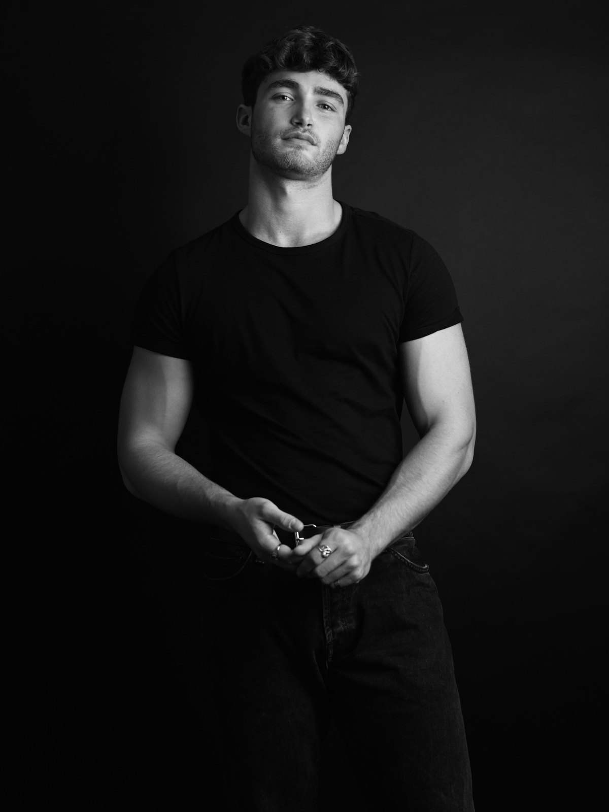
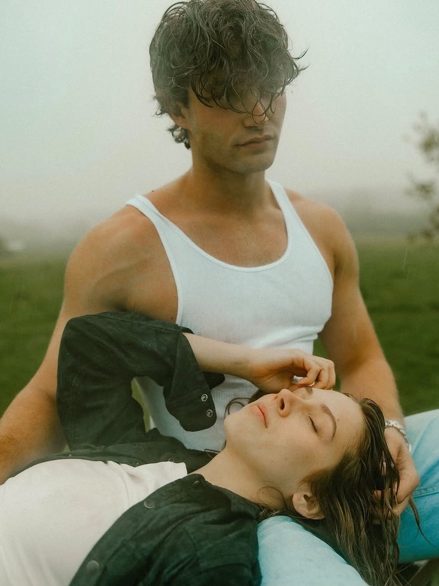
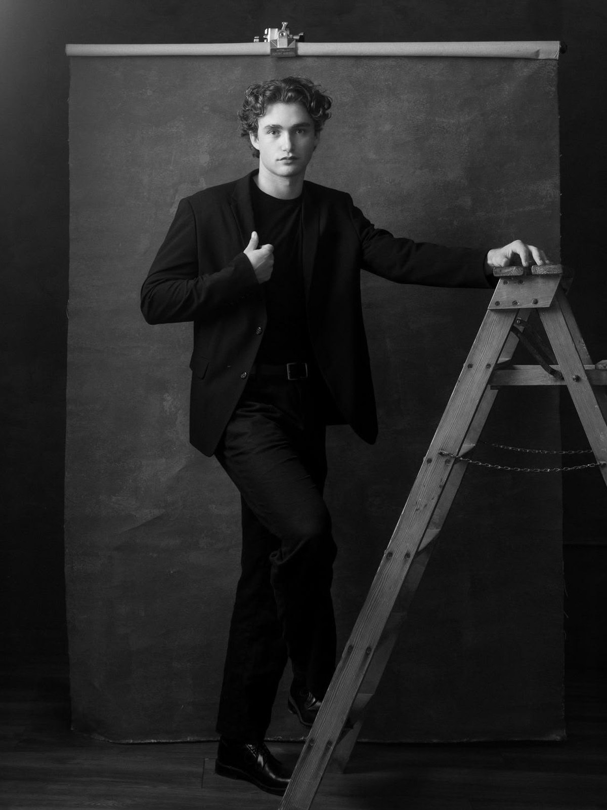
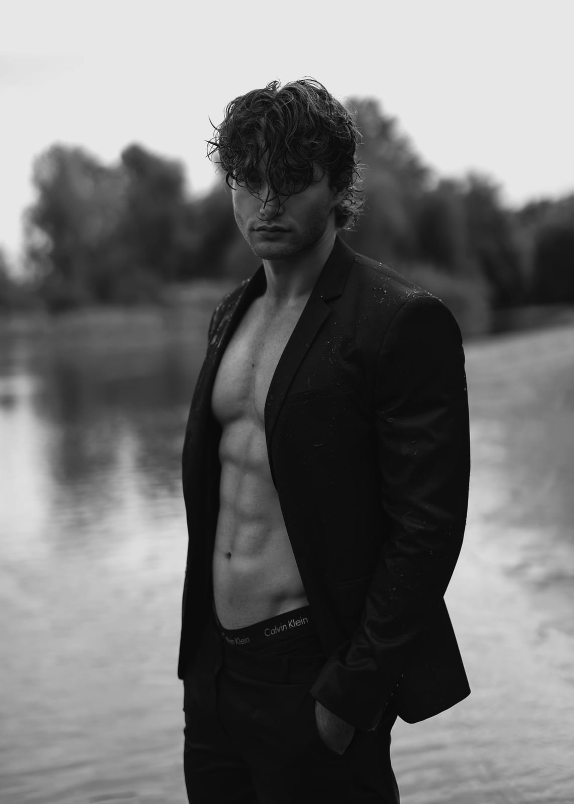
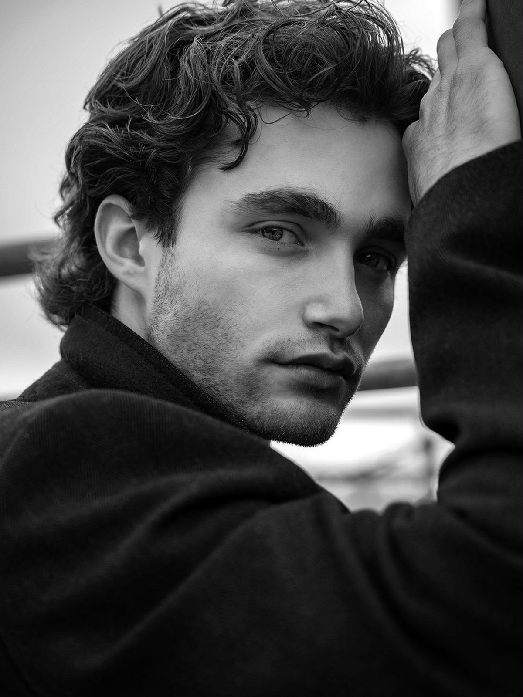
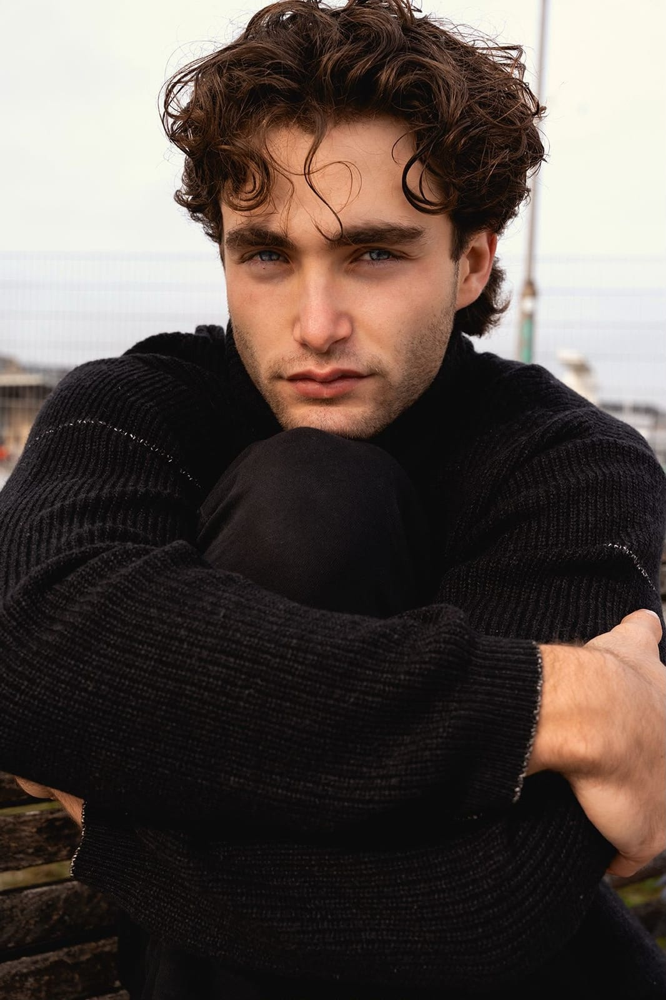
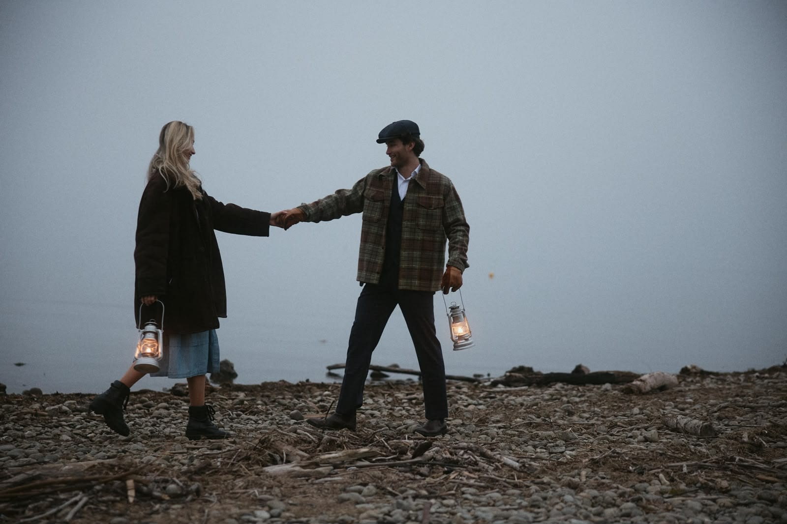
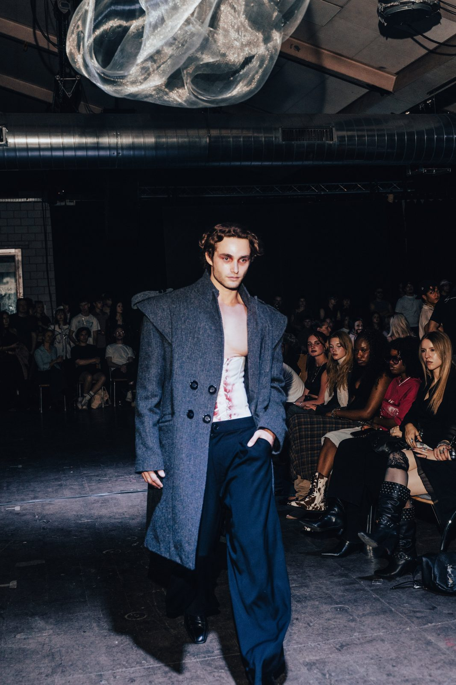
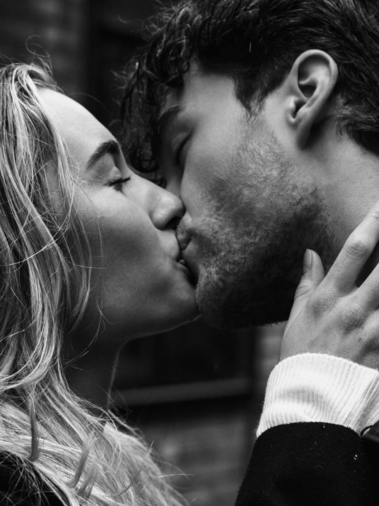

Kapitel 01 · Die Anfänge
Meine erste Begegnung mit dem Modeling hatte ich mit knapp 14 Jahren, als ein Hundefotograf zu uns nach Hause kam, um unsere drei damaligen Windhunde zu fotografieren und auf Wunsch meiner Mutter auch ein paar Bilder von mir machte. Zufällig und ohne jede Erfahrung wurden die Bilder richtig gut und sind bis heute in einem Buch bei uns zu Hause verewigt.
Fünf Jahre später, ich bin 19, stehe ich mit meiner damaligen Freundin wieder vor der Kamera. Eigentlich nur als schöne Erinnerung gedacht, bot mir der Fotograf an, in seine kleine Modelagentur einzusteigen. Trotz meiner fehlenden Hautpflege und meinem geringen Interesse an Mode und Modeling mochten sie mich. Daraus wurde nie ein Shooting oder Job, aber es hat mein Selbstvertrauen vor der Kamera deutlich gestärkt.
Ich organisierte ein weiteres Shooting mit demselben Fotografen, mit dem ich bei der kleinen Agentur gearbeitet hatte, um mich bei einer anderen Agentur zu bewerben, auf die ich über Social Media aufmerksam geworden war. Diese Agentur verlangte Geld für den Eintrag in ihre Datenbank und versprach alle möglichen Jobs, aus denen aber nie etwas wurde. Das Geld bekam ich nach Vertragsende zurück, aber da hatte ich bereits ernsthafte Zweifel, ob ich je Model werden würde. Zusammengefasst: weder die besten Voraussetzungen noch die besten Erfahrungen für den Einstieg in diese Branche.

Kapitel 02 · Die USA, der wahre Anfang
Vier Jahre später bin ich für mein Austauschsemester der Uni in den USA. Weil ich mir eine Pause von meinem Job als Berater in der Schweiz genommen hatte und neben der Uni mehr Zeit hatte, lernte ich ein Amateurmodel kennen, das in der Nähe wohnte. Sie machte es sich zur Aufgabe, mir die USA zu zeigen, und wir verbrachten neben meinen Unikollegen viel Zeit zusammen. Früher oder später blieb es nicht aus, dass sie mich zu Modeling-Events und Fotoshootings mitnahm. Dort lernte ich viel über das Business, Verträge, TFP (Time for Prints/Photos), Jobmöglichkeiten, Agenturen und worauf man achten muss.
Zufällig interessierte ich mich in dieser Zeit mehr für Hautpflege und gab meine Bodybuilding-Ambitionen grösstenteils auf, denn ich entdeckte meine Leidenschaft für gesunde Ernährung, besonders für Mikronährstoffe (mehr dazu im Fitness-Kapitel). Ein schlankerer, definierterer Körper brachte mir ausserdem Vorteile beim Volleyball, bei Calisthenics und im Kampfsport.
Das führte auch zu mehr Selbstvertrauen, und ich hatte in diesen Jahren generell ein anderes Selbstbild entwickelt. All das führte dazu, dass ich mich als Freelance-Model in den USA positionieren und bei Shootings hin und wieder selbst vor die Kamera treten konnte, was mir noch mehr Erfahrung brachte. Auch in Sachen Aussehen und Mode war ich im Vergleich zu den Jahren davor deutlich weitergekommen, sodass ich an Events ernst genommen wurde.

Kapitel 03 · Ein neues Hobby oder ein neuer Traum?
Kurz nach meiner Rückkehr geriet ich in eine kleine existenzielle Krise. Ich hatte in Amerika einiges an Geld ausgegeben, was sich natürlich lohnte, weil ich viel reisen konnte, und weil die Universität dort nicht besonders fordernd war, fühlte ich mich klar unterfordert. Während meiner Zeit in den USA war ich zwar weiterhin Teil des Students Real Estate Club der Universität St. Gallen, merkte aber, dass ich vier Monate lang nicht gearbeitet hatte. Als ich zurückkam, fing ich sofort wieder an meinem früheren Job an, für den ich das Interview schon aus Amerika geführt hatte, und stieg in ein neues Projekt ein.
Eine weitere Mission war es, ein unter Vertrag stehendes Model zu werden. Obwohl ich in den USA etwas Erfahrung gesammelt hatte, ging ich diesen Prozess an wie ein kompletter Anfänger. Meine Polaroids waren nicht gut, und jede seriöse Modelagentur in der Schweiz lehnte meine Bewerbung ab oder antwortete gar nicht. Nur eine Agentur, meine heutige Mother Agency Fotogen, gab mir eine Chance, weil sie Potenzial in mir sah. Die Chance kam mit Bedingungen. Der Inhaber und CEO Jad machte klar, dass ich zuerst starke professionelle Fotos brauche, um in einem so umkämpften Markt eine Chance zu haben.
Er bot mir ein Shooting an, aber ich lehnte ab und versicherte ihm, dass ich mich wieder melden würde, sobald ich solides Bildmaterial hätte. Dann begann ich, nach Fotografinnen und Fotografen zu suchen, die bereit wären, für ihr Portfolio kostenlos mit einem unerfahrenen Model mit schlechten Model-Massen zu arbeiten. Ja, viel Glück dabei.
Mein Ansatz war einfach. Ich kontaktierte Fotografen mit konkreten Moodboards und versicherte ihnen, dass die Bilder vor allem ihrem Portfolio nützen würden und weniger meinem. Ich achtete auch darauf, nie zu erwähnen, dass ich eigentlich kaum Modeling-Erfahrung hatte. Ich schaute, welche Fotografen auf den Websites und Social-Media-Kanälen grosser Agenturen auftauchten, und prüfte auch, ob es neben dem Fotografen, der mich früher fotografiert hatte, noch andere gab, die sich lohnten. Nach rund 25 Direktnachrichten und etwa einer Woche Warten antwortete ein Fotograf positiv, und ich hatte mein erstes Shooting.
Plötzlich wurde ich, trotz der Erfahrung aus Amerika, nervös und steif. Ich versuchte, Posen nachzuahmen, die ich online gesehen hatte, und war einfach nicht ich selbst. Mir fehlten noch das Selbstvertrauen und die Reife, die der Job verlangte, aber jeder fängt irgendwo an. Der Fotograf bemerkte das und gab mir ein paar Tipps. Ich nehme an, er merkte auch, dass ich das noch nicht oft gemacht hatte. Rückblickend war ich mit den Fotos sehr zufrieden, aber ich war ehrlich überrascht, wie wenig Selbstvertrauen ich damals hatte. Vermutlich lag es daran, dass ich im Mittelpunkt stand und den Fokus nicht auf jemand anderen lenken konnte, weil es eine Eins-zu-eins-Session war.

Kapitel 04 · Es nimmt Fahrt auf
Also, um die Geschichte fortzusetzen: Ich schickte die Fotos an den Agenten bei Fotogen. Er fand ein paar davon eigentlich gar nicht schlecht, aber es war klar, dass noch viel mehr nötig war. Ich postete die Fotos, entwickelte ausgefallenere Ideen und sprach wieder Fotografen an.
Zwei weitere Shootings folgten, und sie liefen schon deutlich besser und stärkten mein Selbstvertrauen weiter. Ich stand nicht mehr steif da und versuchte, mich an bestimmte Posen oder Blicke zu erinnern. Stattdessen war ich einfach ich selbst. Natürlich spannte ich weiterhin meine Wangenknochen an und versuchte, einigermassen cool auszusehen, aber ich konzentrierte mich mehr darauf, mich gedanklich in bestimmte Situationen zu versetzen und die Kamera auszublenden.
Nach diesen drei Shootings, die dem hartnäckigen CEO von Fotogen noch immer nicht reichten, organisierte ich ein Shooting mit einem Fotografen aus Deutschland, der schon deutlich etablierter war. Er nahm sich viel mehr Zeit für die Session, die zu meiner bis dahin grössten Modeling-Erfahrung wurde. Das Shooting war ein voller Erfolg. Danach kam ein Shooting, an das ich mich wohl mein Leben lang erinnern werde: das Shooting mit Karin Merz.
Karin Merz war, gerade im Rückblick, ein absoluter Glückstreffer. Sie ist nicht nur eine sehr talentierte und in der Schweiz ziemlich bekannte Fotografin, sondern vor allem war sie bereit, sich mit einem Model, das wie ich noch ganz am Anfang stand, auf ein grossartiges Projekt einzulassen. Spoiler: Die Stimmung war unglaublich. Dieses Shooting hat mir gezeigt, was wirklich starke Bilder ausmacht, wie echte Zusammenarbeit zwischen Fotograf und Model aussieht, wie ein Moodboard in ein fertiges Projekt übersetzt wird und wie Postproduktion tatsächlich funktioniert, nicht einfach durch das Nachmachen von YouTube-Tutorials.
Obwohl es mitten im September war, stiegen wir beide in die Aare, einen Fluss in der Schweiz, und probierten viele Ideen aus. An diesem Tag stimmte alles: die Stimmung, das Wetter, die Kleidung, die Atmosphäre, meine Haarlänge und Karins Energie. Die Ergebnisse sprechen bis heute für sich und brachten mir zwei Monate später sogar mein erstes kleines Magazincover und schliesslich den Einstieg bei der Modelagentur Fotogen, denn auch Jad war sehr beeindruckt.
Von da an ging es richtig voran. Ich trat nicht mehr wie ein Hund an Fotografen heran, der nach einem kostenlosen Shooting bettelt. In der Praxis wurde es umgekehrt, und die ersten bezahlten Shootings tauchten auf.
Dazu ergab sich eine weitere Gelegenheit: ein Shooting für Migrol, das für meine damaligen Verhältnisse sehr gut bezahlt war. Alles ging in die richtige Richtung. Das geschah noch bevor ich offiziell bei Fotogen unterschrieben hatte, weil der Aufnahmeprozess länger dauerte als erwartet und meine Bilder noch auf die Agentur-Website geladen werden mussten.

Kapitel 05 · Jad Hayek, ein Mann mit Vision
Jeder, der meine Social Media anschaut und eins und eins zusammenzählen kann, weiss, dass Jad Hayek, CEO von Fotogen, ab jetzt de facto mein Agent ist. Ich bin nun ein unter Vertrag stehendes Model bei einer der grössten und etabliertesten Modelagenturen der Schweiz. Fotogen gibt es seit mehr als 50 Jahren, und mein Agent Jad hat 32 Jahre Erfahrung als CEO und noch länger als Booker. Das ist das echte Ding.
Es dauerte einen Moment, bis das sackte, und ich war überglücklich. Die Aufregung wuchs noch, weil zeitgleich mit der Vertragsunterschrift eine Anfrage für eine Hauptrolle in einer Galaxus-Produktion kam, die deutlich mehr Erfahrung verlangte und auch ein viel höheres Honorar brachte als alles, was ich bisher gemacht hatte. Ab da konnte das Modelleben wirklich beginnen.
Alles begann mit meinem ersten E-Casting für die Rolle. Dabei lernte ich, worauf es wirklich ankommt und wie die Branche funktioniert. Einige Zeit später folgte das Live-Casting. Es lief sehr gut, aber am Ende ging der Job an einen Schauspieler. Trotzdem konnte ich eine Nebenrolle übernehmen und hatte sogar eine Sprechrolle, worüber ich mich sehr freute. Gleichzeitig begann ich, über Instagram unbezahlte Shootings mit immer bekannteren Fotografen zu organisieren. Die Agentur im Rücken zu haben machte einen klaren Unterschied, und mit jedem Shooting lernte ich dazu.
Sehr lehrreiche Shootings folgten. Die, die mir am meisten gebracht haben, verdienen eine genauere Erklärung samt Begründung. Das Shooting mit Britta Bröhl am Bodensee. Hier lernte ich, ähnlich wie bei Karin, aber noch intensiver, wie wahre Harmonie zwischen Fotografin und Model aussehen kann und wie in kurzer Zeit starke Ergebnisse entstehen, wenn die Vorbereitung stimmt. Das aktuelle Hauptbild dieser Seite (07.03.2026) wurde zum Beispiel ebenfalls von ihr aufgenommen.
Vor dem Shooting kommunizierten wir per Chat und Sprachnachrichten und lernten uns gut kennen. Das Shooting selbst fand draussen statt. Sie hatte einen klaren Shooting- und Locationplan vorbereitet. Wir hatten eine Pack- und Einkaufsliste und sogar eine eigene Playlist, die die emotionale Stimmung beim Shooting lenken sollte.
Das war das erste Mal, dass ich mich komplett fallen liess. Ich legte jede Form von Zögern ab. An einem Punkt stand ich oben ohne in eisiger Kälte draussen, mit Fremden um mich herum, und spielte in einem Moment, als würde die Welt untergehen, und im nächsten, als würde ich gleich jemanden umbringen. Es wurde zu einem der emotionalsten Shootings, die ich bisher erlebt habe.
Wieder stimmte, wie bei Karin, alles. Die Atmosphäre, die Vorbereitung, die Energie am Set. Es überrascht nicht, dass sich die beiden Fotografinnen bis zu einem gewissen Grad kennen. Ich weiss nicht genau warum, aber mit Fotografinnen habe ich unglaublich viel gelernt. Oft fühlte es sich an, als könnte ich durch die Kamera hindurch direkt in die Augen der Person dahinter sehen. Zu der Zeit fühlte ich mich auch extrem wohl vor der Kamera.

Kapitel 06 · Die Grenzen der Kreativität
Das nächste Shooting, das eine genauere Erklärung verdient, war das mit Chris Widmer. Auch hier standen echte Emotionen im Mittelpunkt, aber der Ansatz war ein ganz anderer als bei Britta Bröhl. Das Shooting mit Chris und seiner Freundin Alina war mit Abstand eines meiner längsten Shootings, und wieder lernte ich enorm viel. Besonders war, dass ich zusammen mit meiner damaligen Freundin teilnahm, die damals noch dabei war, meine Freundin zu werden, und das Projekt wurde zu einem intensiven Paarshooting.
Diese Erfahrung wurde zu einem weiteren starken Lernmoment. Chris forderte mich nicht nur auf, ich selbst zu sein, sondern auch zu experimentieren und meine Komfortzone zu verlassen. Das Ziel war, sehr ungewöhnliche Bewegungen auszuführen und jegliches Schamgefühl völlig abzulegen. Am Ende drehten wir am See in Retro-Outfits ein romantisches Abschlussvideo, das das ganze Projekt abrundete.
Durch dieses Shooting wurde mir klarer, dass es nicht reicht, nur die Emotionen zu wechseln; der körperliche Ausdruck dieser Emotionen ist genauso wichtig. Bis dahin waren meine emotionalen Wechsel meist an kleinen Veränderungen der Kopfhaltung, des Augenausdrucks oder der Haarbewegung sichtbar. Bei Chris ging es darum, den ganzen Körper mit der Emotion zu aktivieren.
Ich lernte auch, dass Bilder unscharf sein und trotzdem stark wirken können. Kreativität hat keine klaren Grenzen. Das zeigt, wie vielseitig diese Arbeit sein kann, und es zeigt auch, dass viele typische Fashion-Kampagnen oder E-Commerce-Jobs relativ routiniert ablaufen, während die anspruchsvollere und kreativere Arbeit oft in persönlichen Projekten wie Editorials stattfindet.
Nach mehreren solchen Shootings entwickelte ich auch ein erstes echtes Verständnis für Lichtverhältnisse, Kameraarbeit und Bildbearbeitungstools wie Capture One. Diese Elemente spielen eine entscheidende Rolle für die finale Komposition eines Bildes.
Chris gab mir beim Abendessen nach dem Shooting auch einen extrem wichtigen Rat, besonders dazu, wie man an die Branche herangeht, um mehr Jobs zu bekommen und seine Position in der Community zu stärken. Nur das Beste ist gut genug. Nur die allerbesten Fotos verdienen es, gepostet zu werden, denn Posten zeigt einen Qualitätsanspruch. Nimm nur Shootings an, die dein Portfolio klar verbessern, und trau dir mehr zu. Du hast bereits Erfahrung und mehrere kleinere Jobs abgeschlossen.
Diese Einsicht war wichtig. Von da an löschte ich viele Posts, strukturierte meinen Instagram-Auftritt um und veränderte meine Online-Präsenz grundlegend.
Das nächste erwähnenswerte Shooting war mit Thomas Kopp. Von Location und Moodboard her war das Shooting selbst nicht besonders ungewöhnlich, aber ich hatte viel Positives über ihn gehört und wusste, dass es eine gute Gelegenheit sein würde, das bisher Gelernte anzuwenden.
Der wichtigste Lernmoment dort war zu verstehen, wie sehr allein Selbstvertrauen ein Bild prägen kann. Selbstvertrauen kann vieles gut aussehen lassen. Es war auch eine weitere Übung darin, die Komfortzone weiter zu verlassen. Ich lachte viel, ich war zu diesem Zeitpunkt fast schon professionell darin, überzeugendes Lachen zu produzieren, und ich spielte viel mit meinen Haaren und der Kleidung.
Thomas schuf eine aussergewöhnliche Atmosphäre und ein tolles Lichtsetup, wodurch mehrere dieser Fotos zu meinen absoluten Favoriten wurden. Er zeigte auch, wie schnell man sich bei einem Shooting wohlfühlen kann. Seine Liebe zum Detail fiel auf. Er hatte sein eigenes Studio stark umgebaut, eine starke Playlist vorbereitet und behandelte mich so herzlich, dass das Shooting fast nur gut werden konnte.
Er war auch ein weiterer wichtiger Gesprächspartner. Als Agenturfotograf von Biba Models hatte er Einblick in die breitere Agenturlandschaft. Gespräche wie diese halfen mir zu verstehen, was bei anderen Agenturen passiert, und in der Branche auf dem Laufenden zu bleiben.

Kapitel 07 · Der Preis des Auffallens (und die Strategie dahinter)
Modeling aus Spass macht Freude, aber irgendwann stellte sich ganz natürlich die Frage: Was ist der Business Case dahinter, wie ein BWL-Student sagen würde? Wie kommt man eigentlich an die grossen Deals, die ständig auf Social Media auftauchen?
Zufällig stiess ich auf einen Casting-Aufruf auf Social Media, der zu einem etwas grösseren Hautpflege-Job mit Edgar Hernandez führte, gefolgt von einem ungeplanten TFP-Shooting danach. Bei diesem Projekt kam zum ersten Mal das Thema auf, erfolgreich zu werden und gut bezahlte Jobs zu sichern. Wieder lernte ich enorm viel und begann, es bewusster anzuwenden. Die Details lassen sich kurz schwer erklären und hängen stark von der individuellen Situation ab, weshalb sie besser in einem eigenen Coaching besprochen werden.
Weitere wertvolle Einblicke kamen beim Galaxus-Shooting, und viele der Prinzipien begannen in der Praxis gut zu funktionieren. Dass Jad für mich nach Jobs suchte, war wichtig, aber Geduld war nie meine grösste Stärke. Ich wollte verstehen, was ich selbst tun konnte: wie ich mehr eingehende Anfragen anziehe und möglicherweise auch selbst Anfragen generiere.
Die Zusammenarbeit mit Hernandez zeigte mir auch, wie man sich auf kommerziellen Produktionen richtig verhält und worauf es dort wirklich ankommt. Eine weitere wichtige Lektion war Neugier. Gespräche mit Leuten am Set bringen oft kleine, aber wertvolle Erkenntnisse, und jedes Gespräch kann dem Lernprozess etwas Neues hinzufügen.
Eines wurde mir ausserdem klar: Ich brauchte mehr Agenturen.
Mir wurde auch klar, wie entscheidend Social Media ist. Viel Traffic, Engagement, Likes und Kommentare können echten Wert haben. Das warf ganz natürlich die Frage auf, wie man auf Social Media wächst und in welche Richtung sich die persönliche Marke entwickeln sollte. Dabei spielte mein Businesspartner Bada Cichon eine wichtige Rolle, den ich im Abschnitt «Unternehmertum» genauer erkläre.

Kapitel 08 · In der grossen Liga spielen (oder das ist das Ziel)
Also, lieber Herr Fotogen-CEO, wie schaffe ich jetzt eigentlich den Durchbruch? Die Antwort ist komplizierter, als es scheint. Wenn man die Branche genauer anschaut, sieht man schnell endlose Schlangen bei Castings, extrem schlanke Männer und unzählige Models, die bereits bei Agenturen unter Vertrag sind.
Zum Glück ist Jad sehr gut vernetzt. Er schaffte es ziemlich schnell, mich bei Talents Models in München unterzubringen, die damals ihre Männerabteilung ausbauen wollten und in jemandem wie mir Potenzial sahen. Der Prozess war unkompliziert, und sie schicken regelmässig Anfragen.
Das war erst der Anfang. Anfang Februar, nach Rücksprache mit Jad, fuhr ich nach Mailand und unterschrieb bei Models Milano, worüber ich mich sehr freute. Zum Glück hatte ich nicht nur meine Sedcard, sondern auch mein altes Model-Book von früher dabei, was sich als gute Entscheidung erwies.
Die Details der Mailand-Reise sind hier nicht nötig, aber eines wurde klar: Masse lassen sich nicht durch gutes Posing oder Charisma ausgleichen. Wenn die Kleider nicht passen, passen sie einfach nicht. Das gilt vor allem für Fashion-Kampagnen.
Die Lücke war klein, aber mein Brustumfang war etwas zu gross. Das Problem selbst ist überschaubar. Drei bis vier Kilogramm abnehmen und weniger Wasser einlagern löst es. Das war nötig, um für grössere Marken konkurrenzfähig zu bleiben und die Möglichkeiten für die Fashion Weeks in Mailand oder Paris nicht einzuschränken.
Gleichzeitig funktionierte mein eigener Ansatz, gut bezahlte Jobs ausserhalb des Agentursystems mit eingeschränkten Bildrechten zu bekommen, sehr gut. Das stärkte auch meine Glaubwürdigkeit. Ich durfte an einer grösseren Schuhkampagne für Botty teilnehmen, einer Marke mit vielen Standorten in der ganzen Schweiz, die bisher zu meinen wenigen Fashion-Kampagnen gehört.
Im Moment laufen Gespräche mit Agenturen in Paris, um mich auch dort strategisch zu platzieren. Seit das Unisemester wieder begonnen hat, mache ich deutlich weniger TFP-Shootings. Wenn, dann nur mit Fotografen, die mich persönlich überzeugen oder deren Arbeit mein Portfolio klar stärkt. Ein Beispiel siehst du unten.
Modeling ist zu etwas geworden, das mir wirklich Freude macht, und es hat sich eine echte Leidenschaft entwickelt. Wohin der berufliche Weg von hier aus führt, bleibt offen.

Kapitel 09 · Als Team gross werden
Nach langer Überzeugungsarbeit hat sich meine Freundin schliesslich entschieden, ebenfalls zu Fotogen zu gehen. Sie hatte schon mehrere Jobs und viele Fotoshootings gemacht, aber meist aus Spass. Jetzt will sie es ernsthafter professionalisieren. Das Bild unten ist bisher eines meiner absoluten Lieblingsbilder.
Wir hatten schon vorher ein paar Shootings zusammen gemacht, aber die Vertretung durch Fotogen öffnet jetzt die Tür zu grösseren Hochzeitsshootings und anderen Paarprojekten. Im Moment ist ziemlich viel in Bewegung. Gleichzeitig entschied ich mich, diese Website zu bauen und bezahlte Modeling-Beratung anzubieten.
Der Grund ist einfach. Ich bekomme fast jede Woche Fragen dazu, wie alles angefangen hat und wie man ähnlich mit Modeling Geld verdienen kann. Ausserdem habe ich bereits mehrere Projekte geplant und ein paar Vereinbarungen unterschrieben.
Nicht jedes Detail wird hier geteilt. Viele Aspekte bleiben offen, zum Beispiel wie ich Jobs ausserhalb des Agentursystems an Land gezogen habe, wie sich das Aussehen verbessern lässt, wie man mit Posten und Verhalten vor der Kamera und gegenüber anderen Menschen umgeht, wie man Körper und Gesicht formt oder wie Verträge verhandelt werden. Alles zu erklären würde weit über das hinausgehen, was bereits zu einer kleinen Autobiografie geworden ist. Vieles lässt sich auch nicht verallgemeinern und muss individuell angeschaut werden. Genau dafür sind die Coaching-Sessions da.
Ich bin gespannt, wohin die Reise führt, aber sie macht unglaublich Spass. Dieses Leben mit meiner Freundin zu teilen schafft ausserdem unvergessliche Erinnerungen.

Kapitel 10 · Jobs, Jobs und noch mehr Jobs
Mit der Zeit bin ich tief in die ganze Szene eingetaucht und habe in der Schweiz sehr viele Jobs gemacht, von denen du viele auf dieser Website findest. Sie reichen von Runway-Shows bis zu Videowerbung, und auch eine ganze Reihe Fashion-Jobs war dabei. Ich konnte mir ausserdem eine weitere Agentur sichern, New Generation in Amsterdam.
Es gab allerdings einen grösseren Rückschlag. Als ich mit meinem Agenten in Mailand sprach, sagte er mir, dass ich für den Runway in Mailand, Paris, London und vergleichbaren Märkten ungefähr zwanzig Kilogramm zu schwer sei. Das war mir nicht bewusst gewesen. Ich dachte, ich liege nur leicht über den Massen, deshalb hat es mich hart getroffen.
Trotzdem gebe ich diesen Traum nicht auf. Stattdessen versuche ich, mir meinen Weg über Bekanntheit und über die anderen Fashion Shows zu erarbeiten, bei denen ich in der Schweiz laufe und wo die Masse weniger streng gemessen werden, und so die Tür nach Mailand und Paris zu öffnen, ohne so viele Kilos verlieren zu müssen. Ich habe jahrelang Bodybuilding betrieben und habe bereits einen sehr tiefen Körperfettanteil. So viel Muskelmasse zu verlieren wäre eine Verschwendung und würde meiner Meinung nach meinem Gesamtbild schaden. Da ich Modeling nur als Nebentätigkeit betreibe und nicht alles auf eine Karte setze, habe ich mich entschieden, meinen Körper nicht so drastisch zu verändern, nur um diesen Weg zu versuchen.
Es gab auch andere Rückschläge. Ein Vogue-Shooting zum Beispiel wurde in letzter Sekunde abgesagt, und ich hatte Probleme mit Verträgen, bei denen Leute versuchten, mich auszunutzen. Das könnte man die Schattenseite der Branche nennen.
Trotzdem macht es mir enorm Spass. Ich konnte zusammen mit meiner Freundin, die ebenfalls modelt und die du hier oft sehen wirst, sehr viel verwirklichen, und ich habe viele spannende Jobs für grosse Schweizer Marken an Land gezogen.
In letzter Zeit habe ich gemerkt, dass Schauspielerei bei grossen Werbekampagnen ein enormer Vorteil ist, weshalb ich mich für mehrere Nebenrollen in kleineren Filmen beworben habe. Ich warte noch auf Rückmeldungen, und es macht das Ganze schöner als je zuvor.
Gleichzeitig ist mein Zeitmanagement schlechter als je zuvor. Ich habe bei Growis angefangen, was sehr zeitintensiv ist, und zusammen mit meinem Studium, meinem Job bei der Versicherung, dem Modeling und dem Sport hat das meinen Zeitplan stark belastet. Dadurch muss ich bei den Modeling-Jobs, die ich annehme, wählerischer sein, und ich habe nicht immer Zeit, was schon ab und zu zu Konflikten geführt hat. Das stört mich aber nicht, denn ich darf trotzdem das tun, was ich liebe.
Ausserdem habe ich meine Social-Media-Präsenz mit Modeling-Videos, persönlichem Real Talk, Get-ready-Clips und ein paar kritischen Business-Memes ausgebaut, um bekannter zu werden und meinen Traum ein Stück weiterzutragen.